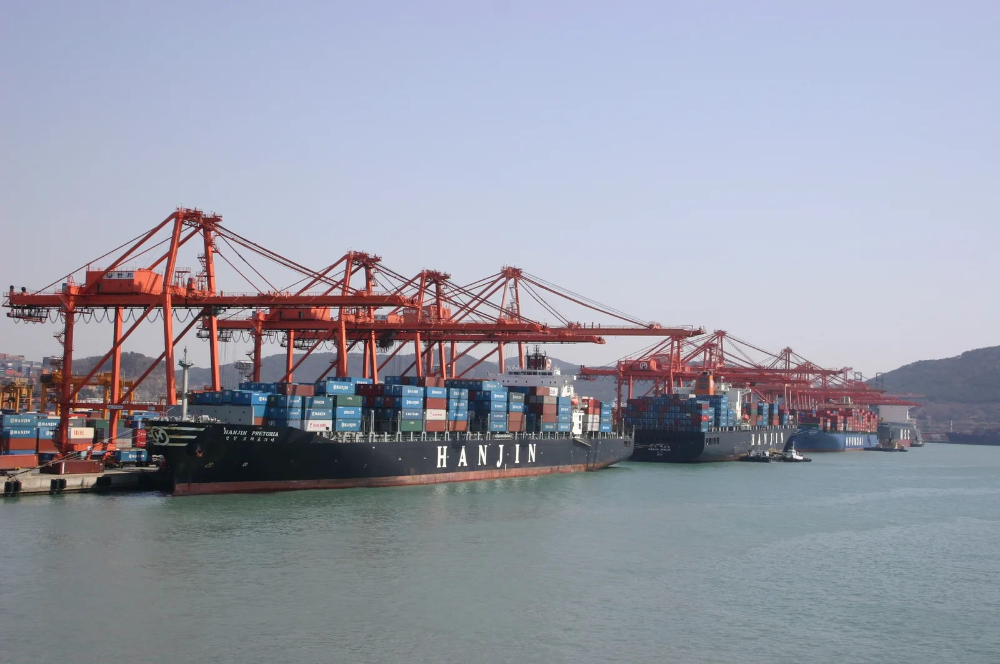

▲ 컨테이너 터미널. 미국과 EU는 자동차 관세를 놓고 5월부터 8월까지 줄다리기를 벌였다 ⓒ Wikimedia Commons (CC BY-SA 4.0)
2026년 5월 1일, 트럼프 대통령은 "EU가 무역 합의를 지키지 않는다"며 유럽산 자동차·트럭에 대한 관세를 기존 15%에서 25%로 인상하겠다고 발표했다. 발표 직후 BMW, 메르세데스, 폭스바겐 등 유럽 완성차 업체들의 주가가 흔들렸다. 그런데 석 달 뒤인 8월, 최종적으로 확정된 관세율은 인상 전과 같은 15%였다.
1. 5월, 25% 인상 폭탄 선언

▲ BMW 5시리즈. 관세 25% 인상 예고 당시 BMW·메르세데스 등 독일 완성차 업체들이 직격탄을 맞을 것으로 우려됐다 ⓒ BMW
트럼프 대통령은 지난해 여름 스코틀랜드에서 체결된 미-EU 무역 합의를 EU가 제대로 이행하지 않았다고 주장하며, 유럽산 승용차·트럭에 대한 관세를 25%로 인상하겠다고 발표했다. 미 행정부는 무역확장법 232조를 근거로 들었다. 이 발표 직후 유럽 완성차 업체들의 주가가 일제히 하락했고, 미국 시장 의존도가 높은 프리미엄 브랜드일수록 타격이 클 것이라는 우려가 제기됐다.

▲ 아우디 A6. BMW·메르세데스와 함께 미국 판매 비중이 높은 독일 프리미엄 브랜드로, 관세 인상 시 직격탄이 우려됐다 ⓒ Wikimedia Commons
2. 폰데어라이엔의 반박, 그리고 협상

▲ 메르세데스 벤츠 E클래스. EU 집행위원장은 "합의는 합의"라며 관세 인상에 정면으로 반박했다 ⓒ 메르세데스벤츠
우르줄라 폰데어라이엔 EU 집행위원장은 "합의는 합의"라며 미국의 일방적 관세 인상 시도에 반박했다. 이후 양측은 관세 폭탄 시한을 앞두고 협상 테이블에 앉았고, EU는 미국산 공산품에 대한 관세 철폐와 일부 미국산 농수산물에 대한 특혜적 시장 접근권 제공을 조건으로 내걸며 타협안을 모색했다.
3. 최종 결과 — 15%로 봉합, 오히려 인하

▲ BMW X3. 최종 확정된 관세율은 25%가 아닌 15%로, 오히려 기존 27.5%보다 낮아졌다 ⓒ BMW
결과적으로 2026년 8월 1일자로 소급 적용된 최종 관세율은 15%였다. 이는 25% 인상 위협은 물론, 협상 이전 기준이었던 27.5%보다도 낮은 수치다. 여기에 일부 의약품 성분과 항공기 부품에 대한 관세 면제 조항도 함께 포함됐으며, 이 면제 조항은 9월 1일부로 적용됐다. 다만 이 타협은 EU가 미국산 공산품 관세를 철폐하는 입법을 마련하는 것을 전제로 한다.
4. 한국차는 여전히 25% — 상대적으로 불리
이번 협상 결과로 눈에 띄는 대목은 따로 있다. 유럽산 자동차 관세가 15%로 정리되는 동안, 한국산 자동차에 적용되는 관세는 25%로 남아 상대적으로 불리한 위치에 놓였다는 점이다. 일본산 자동차 역시 15%가 적용되고 있어, 한국 완성차 업계 입장에서는 미국 시장에서 유럽·일본 브랜드 대비 가격 경쟁력이 약화될 수 있다는 우려가 나온다.

▲ 현대차 울산공장 조립라인. 유럽·일본산이 15%로 낮아진 사이 한국산은 25%에 묶여 미국 시장 가격 경쟁력 약화가 우려된다 ⓒ Wikimedia Commons
5. 정리
체크포인트
- 트럼프 대통령은 5월 EU산 자동차 관세를 15%→25%로 인상하겠다고 예고했다.
- EU의 양보안을 거쳐 최종적으로는 15%로 봉합됐다 (8월 1일 소급 적용).
- 일부 의약품·항공기 부품은 관세 면제 혜택도 받았다.
- 반면 한국산 자동차 관세는 25%로 유지돼 상대적으로 불리해졌다.